Poultry barn validation tool

Instructions
The above pairs of images show a single area at three levels of increasing spatial context. The red highlighted area shows what the model has predicted as a poultry barn.
Use the buttons to mark a prediction as "correct", "incorrect", or "unsure".
If the red highlighted area is covering some portion of a building, then assume that the entire building has been identified as a poultry barn. In other words, do not mark a prediction that partially covers a poultry barn as "incorrect" just because the entire building is not highlighted in red.
If you are unsure of the correct labeling do not guess, select "unsure".
You can also use the hotkeys 1-3 (the corresonding number is labeled on each button) instead of clicking.
Classification guide
Poultry barns are generally long and narrow with several attached feeders, along with vents/fans on the ends of the barns (may or may not be visible). They do not use the same waste disposal system as the cattle/swine barns, so there is usually no lagoon nearby.
The overall shape of the barn is usually the most valuable indicator.
Close-up of an attached feeder: 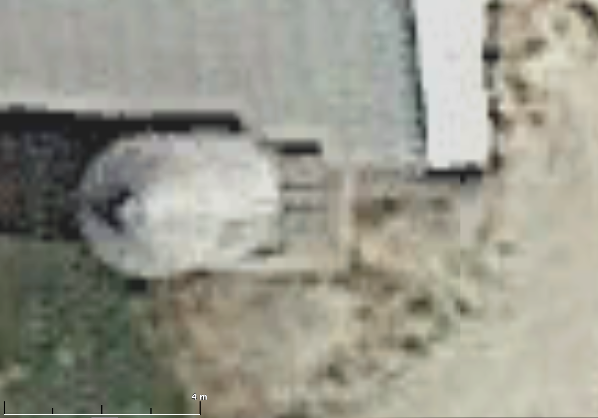
Correct classifications
| The barn is the correct shape and feeders/vents are visible. | 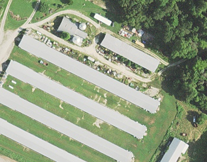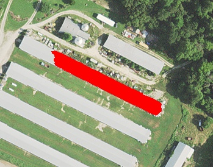 |
| The barn is the correct shape and feeders/vents are visible. | 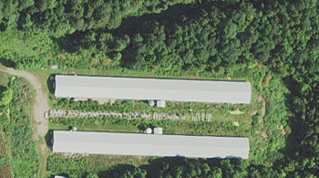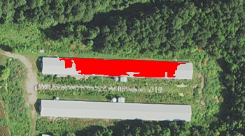 |
| The barn is the correct shape and feeders are visible. | 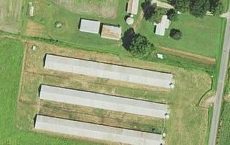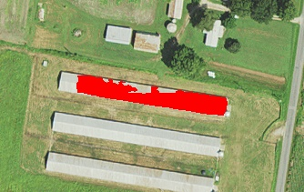 |
| The barn is the correct shape and feeders are visible. | |
| The barn is the correct shape and feeders are visible. | 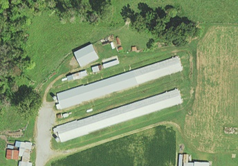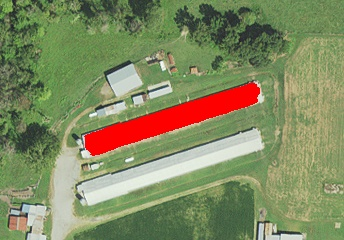 |
Incorrect classifications
| The barn is the correct shape, however no feeders are visible, and it is positioned parallel to a paved road (see the powerlines) which is not usual of a poultry barn. | 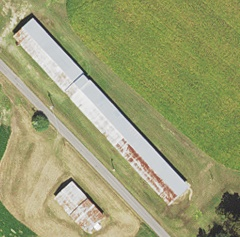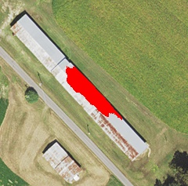 |
| The barn is not the correct shape to be a poultry barn. There are feeders and a nearby lagoon, so this is likely a swine barn. | 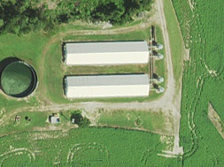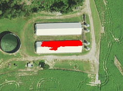 |
| The barn (or, more likely, the warehouse) is not the correct shape, and it looks to be in a heavily industrial area. | 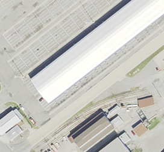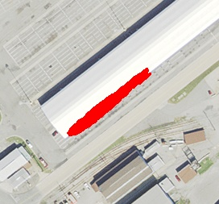 |
| This is a road -- definitely not a poultry barn. | 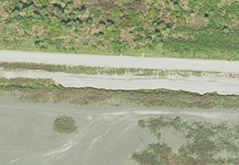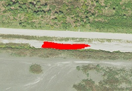 |
| This is a commercial building of some sort -- definitely not a poultry barn. | 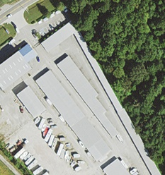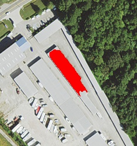 |
| The barn is not the correct shape, however feeders may be visible. This is likely a swine barn. | 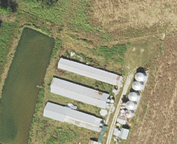 |
Unsure classifications
| The barn is the correct shape, however there are no feeders visible and there are residential buildings visible. | 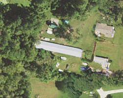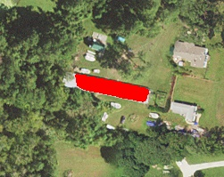 |
| The barn is the correct shape, however there are no feeders visible and the roof shape/texture is different from normal poultry barns. This may be a greenhouse. | 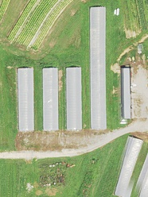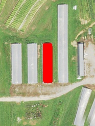 |
| The barn is not the correct shape and there are no feeders visible. This may be a greenhouse. | 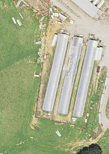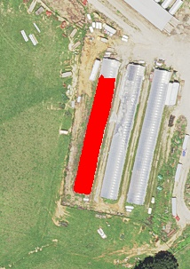 |